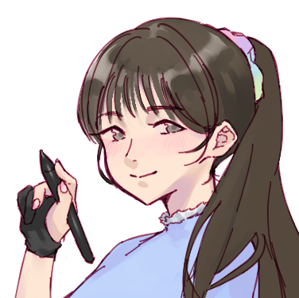
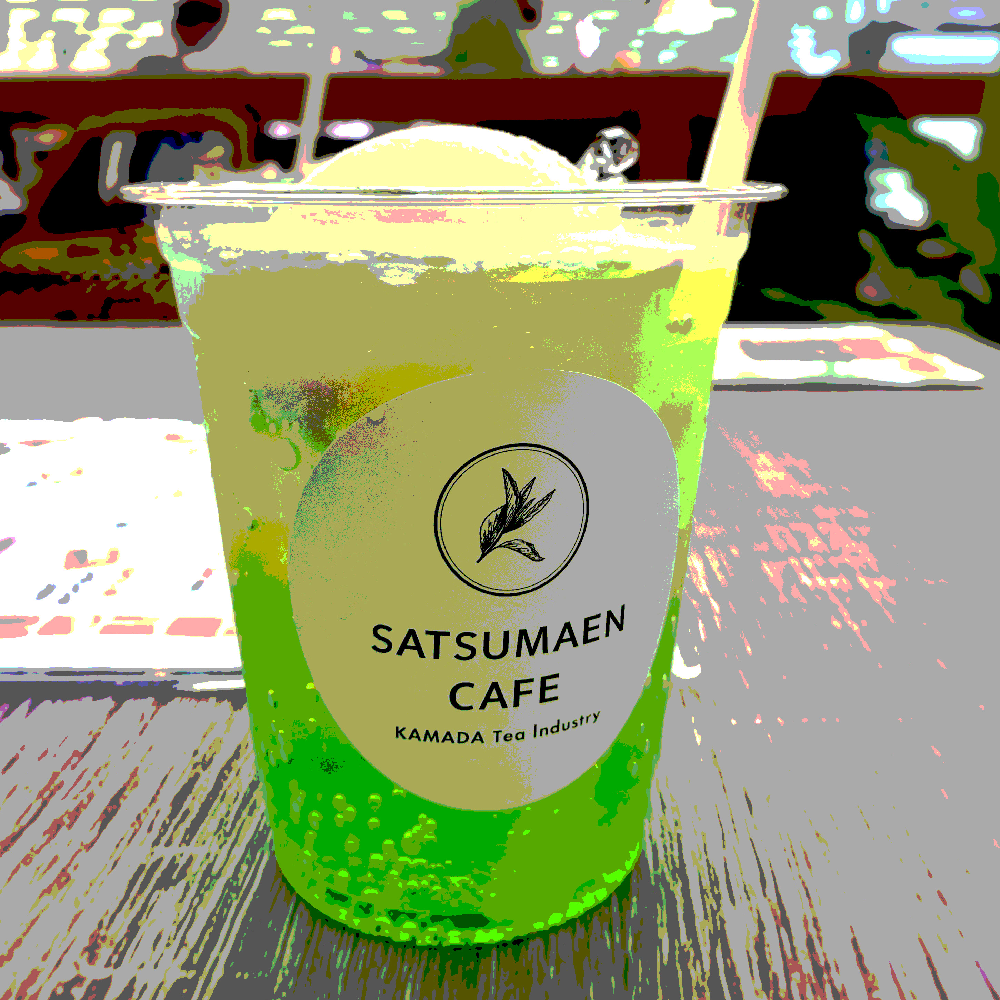
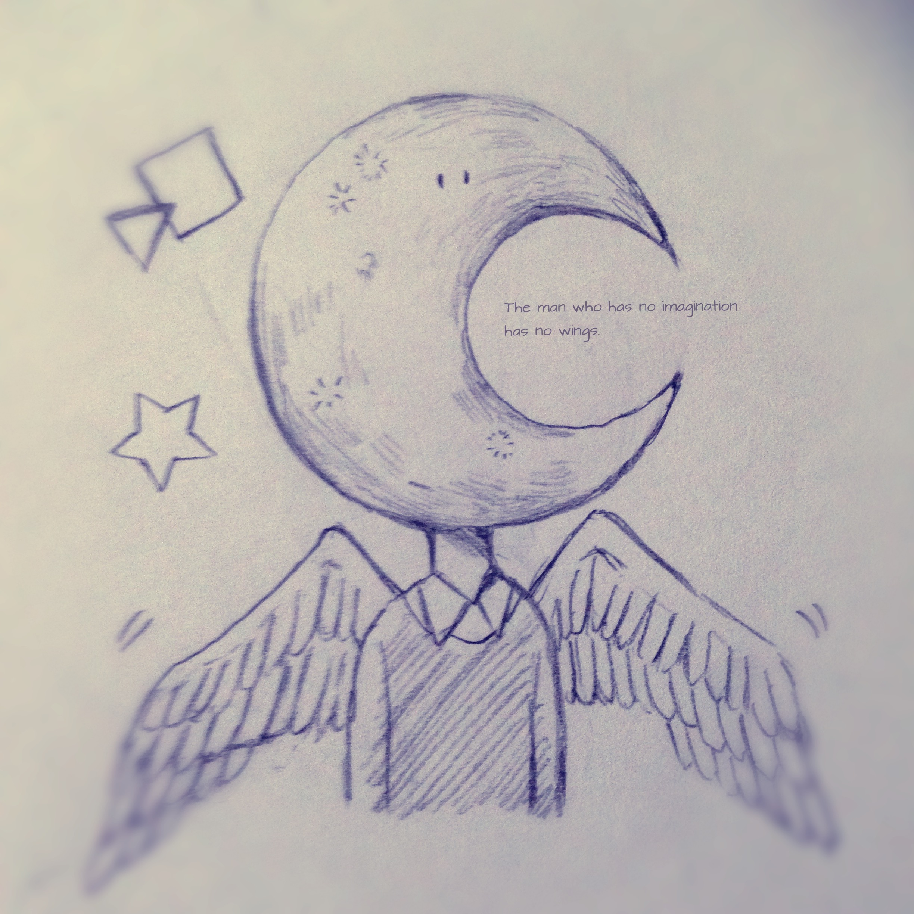

ABOUT ME
松尾春花 / 句点。（Kuten）
1996年5月都城生まれ / 宮崎県都城市在住
クリエイティブデザイナー
◆ 経験職種
キャリアのスタートとしてDTPデザイナーを1年経験のち、接客販売員を約5年ほど勤める。前職の検収業務と店舗事務など様々な職種を経験する中で30代を迎えたのを機に一念発起し、デザインについて基礎から学び直しました。
◆ 好きなもの＆こと
・インテリア
・ネイル
・新商品のグミ
・虹色
・お笑い
・ゲーム実況動画
◆ これからやりたいこと
お客様の想いを形にするグラフィックデザイナーとしてスキルを吸収して、もっとたくさんの人にトキメキを届けられるようなデザインに挑戦したいです
◆ 制作環境
Windows / ipad
スキル
Illustrator
★★★★☆
自社製品のDTP入稿物でのロゴ修正やDM作成、チラシの制作まで行えます
Photoshop
★★★★★
写真修正、合成、加工からイラスト制作までなんでもおまかせください
HTML / CSS
★★★☆☆
VSCODEを使用してコーディング、マークアップスキルを取得中
Clipstudiopaint
★★★★★
10年来の親友。2dイラスト制作はお任せください
Procreate
★★★★☆
アイデアまとめは手軽なipadで。日々思いついたアイデアをまとめています。


